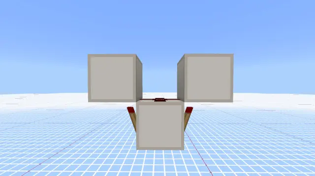
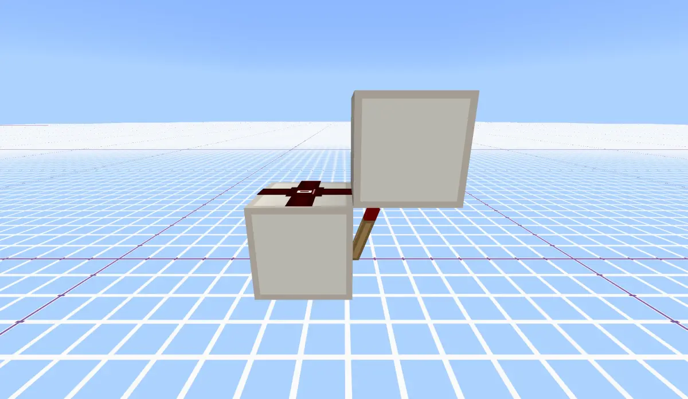
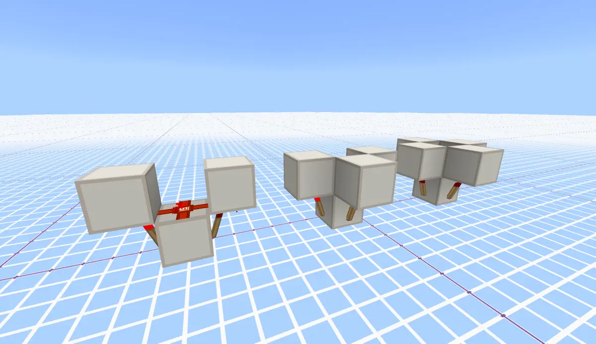
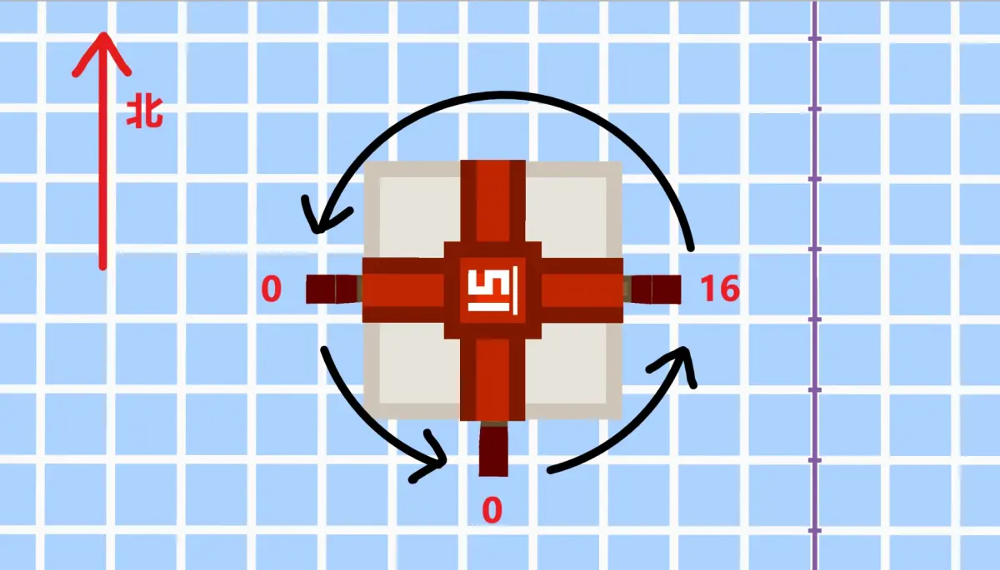
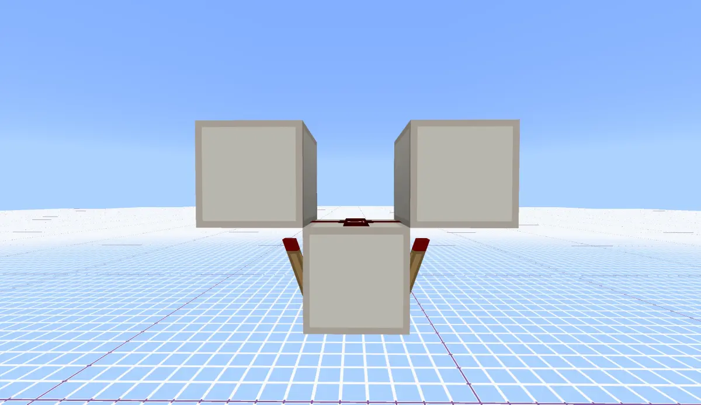

0. 前言
必要知识：
1. 烧火把的电路

如图为一个经典的烧火把电路，火把的内部有一个燃烧值，初始为0；还有一个值CanReigniteFromBurnout(后文简称CR)，用来确定火把在烧毁时能否复燃，默认为false；当CR为true，或燃烧值大于32时，燃烧值不允许增加。
1.1 信号计算
在cacheValue阶段，当火把的信号源只有自己时，燃烧值+1(如果可以)，反转亮灭(新值，后文同)，输出半脉冲；如果燃烧值大于等于16，则火把熄灭，也即火把烧毁，等于16时会输出最后一次半脉冲；如果燃烧值大于32, CR取true；当火把的信号源有其它元件时，燃烧值清零，CR取false，不输出半脉冲。
在evaluate阶段，火把同步前面的亮灭状态及是否输出半脉冲，并且燃烧值再次+1(如果可以)；亮灭即代表普通的信号，半脉冲见上方链接的不完全分析(2) 。
上图为例，火把的燃烧值从0开始，一直增加到16，其间一直输出半脉冲，假如激活活塞，因为活塞不响应半脉冲，所以对活塞来说，无论火把亮灭，都视作亮，活塞持续伸出；燃烧值到17及以后，半脉冲消失，活塞失去信号；燃烧值到33时，CR变为true，燃烧值也不再增加。
1.2 烧火把的复燃
当火把受到方块更新(比如火把旁放一个方块)，且CR为true时，火把会重置燃烧值为0，CR重置为false。
2. 不会烧火把的电路

图中的3种电路都是不会烧火把的电路，并且细心的玩家应该注意到过，它们的亮起顺序是有规律的，也就是从上面看，逆时针顺序。那么mojang肯定是对这种电路做了特殊处理。
这种电路似乎没啥专门的名字，代码中称作RepeaterScenario，(不知是我的英语水平不足，还是开发者的英语水平不足，我不理解这名字跟图中电路有什么关系，)本文就暂时叫做火把阵。
2.1 火把阵的构建
火把阵的构建在更新红石依赖阶段完成，对于需要更新的火把，它会检查其附着方块是不是充能方块或消费者，方块上面是不是红石粉，给方块提供信号的火把是不是插在方块上，火把上面是不是充能方块或(可充能的)消费者，如果都满足，记下火把待用。
然后，按照 北->西->南->东(->北) 的顺序(也即前文的逆时针)，将火把串成环。(怎么串呢？火把内有一个值NextOrder，可以记录下一个火把的指针。)然后北火把的燃烧值改为0(没有就改西，以此类推)，东火把的燃烧值改为16(没有就改南，以此类推)
上图第二个为例，假设右方为东，背后为北，最后的燃烧值和指向图如下：

2.2 火把阵的信号计算
火把阵的信号已经不是半脉冲了。
cacheValue阶段，如果火把有非火把信号源(比如红石粉上放一个红石块)，则火把亮起，燃烧值改为-1；如果燃烧值不为0，火把熄灭，燃烧值不变；如果燃烧值为0，则火把亮起，NextOrder的火把燃烧值改为-1，如果火把阵有3甚至4个火把，则剩的火把燃烧值改为1。
evaluate阶段与前文一致。
或许你看得一头雾水，咋个燃烧值还能变负数的？别急，evaluate阶段是不是还有个燃烧值+1的操作？所以NextOrder的火把燃烧值改为-1，就是为了下一红石刻的cacheValue阶段，该火把的燃烧值是0，能够亮起；而本火把的燃烧值从0变为1，下一红石刻就会熄灭，最终，这些火把就会按照NextOrder指示的逆时针顺序，逐个亮起2gt。
以上图为例，假如西边比南边的先cacheValue，那么它亮起，南边的燃烧值改为-1，东边的燃烧值改为1；下一红石刻，西边燃烧值是1，熄灭，而南边的燃烧值在上一个evaluate阶段变为0，亮起，它会把东边的燃烧值变为-1，又把西边的燃烧值改为1......如此，如果你同时将三个火把上的方块复原，就会看到火把按西->南->东循环亮起。
如果南边比西边的先cacheValue，则只是第一个亮起的变南边罢了。至于到底谁先，这与元件创建顺序有关，先创建的先执行cacheValue，你可以互换它们的放置顺序，然后观察结果。
3. 红石火把无线电
有了以上知识，我们基本可以手撕红石火把无线电了。

如图是一个经典的红石火把无线电，有人有将其称为红牙一代。先放一个火把朝东的烧火把(图中为右)，烧毁后稍等片刻，补上西边的火把，图中电路就完成了。那么到底为什么呢？
step 1. 稳定的熄灭火把
当右边烧火把时，其燃烧值会升至16，熄灭，然后继续升至33，CR变为true。
此时的火把受到方块更新时，会复燃，然后重复上面的过程；然而如果我们试图将其补成火把阵时，一切都变得不一样了。
在红石依赖更新阶段，红石火把会构建火把阵，按照前文的顺序，左边的会指向右边的火把，右边的指回左边，左边的燃烧值变为0，右边的燃烧值变为16。
右边的火把比左边先放置，先计算。
cacheValue阶段，右边火把燃烧值为16，新状态为熄灭；左边火把燃烧值为0，新状态为亮起，更改右边燃烧值为-1。
evaluate阶段，右边火把CR为true，燃烧值不能变；左边燃烧值+1变为1。
如此下去，右边火把燃烧值不能变，停在了-1；左边的火把依靠evaluate阶段，燃烧值会一直加到33，但是其CR仍然为false。最终结果就是，左边火把亮了2gt，右边保持熄灭。
step 2. 传输无线信号
当玩家放下一个生产者或电容器时，游戏会为其创建红石元件，然后添加到pendingAdds列表，在更新红石依赖阶段，元件又会加入pendingUpdates列表，一但pendingUpdates列表有元件，游戏就会更新全局的所有生产者和电容器，调用它们的更新依赖函数，其中当然包括上面的火把。
step 3. 响应无线信号
火把需要更新依赖，开始重新构建火把阵，于是，左边的燃烧值又变为0，右边的燃烧值变为16，想必你已经可以预见后面的事了，左边火把又亮了2gt，这便是红石无线电。
除了放置生产者或电容器，还有一些方法可以产生信号，站内有很多视频都介绍过，它们的本质就是更新到了某个生产者或电容器，让其加入了pendingUpdates列表，最终导致重构火把阵，复原燃烧值。
4. 后记
半脉冲是mojang故意设计的，所谓火把阵也是mojang为了让其输出有规律故意写的判定，但红石无线电的的确确是bug(特性)，至于为什么mojang这么久都不修，那就不得而知了(可能是他们自己都没看懂自己的代码，所以不敢动)。
如果有问题欢迎在评论区指出。